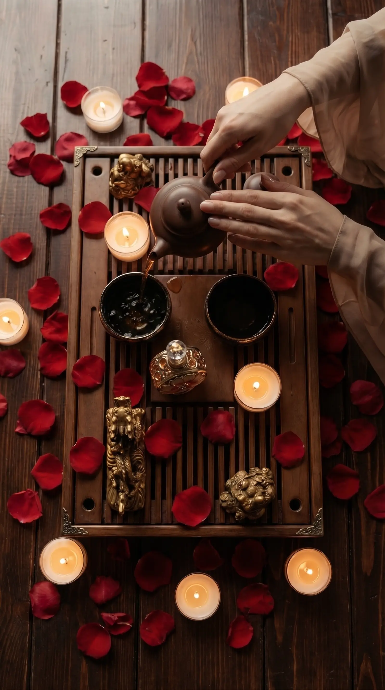

Программа для мам о внутреннем балансе, расслаблении и удовольствии. Мягкий формат помогает выдохнуть, вернуть внимание к себе и прожить пространство не через заботу о других, а через собственный ресурс.

Для кого
Для мам, женщин после периода высокой нагрузки, семейных форматов и подарков, где важна не формальность, а ощущение заботы.
Как проходит
Базовый сценарий длится около двух часов: встреча, настройка пространства, чайная пауза и спокойные практики восстановления. Расширенный формат можно дополнить часовой телесной практикой.
Что останется
Уходит напряжение, появляется ощущение опоры, тепла и личного пространства. Это возможность снова услышать себя.